13곳을 일곱 갈래로 보기
발표자는 AI(Artificial Intelligence) 소식을 기사로 따라가면 이미 늦다고 봐요. 코드가 공개되고, 모델이 처음 올라오고, 가격과 성능이 비교되는 사이트를 직접 들여다보라는 게 이 영상의 출발점이에요. 첫 슬라이드 오른쪽 카드 아홉 장이 그 사이트와 모델 이름이고, 아래 세 칸이 '13 Sites · 6 Categories · 4 Engines'라는 구성을 요약해요.
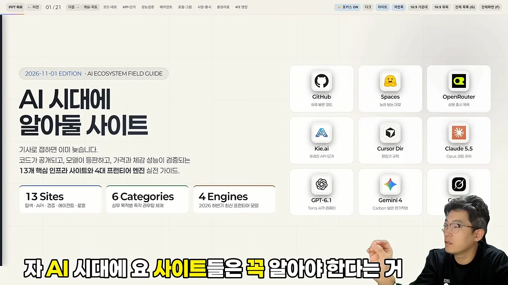
둘째 슬라이드는 13곳을 '무엇을 할 때 여는 곳인가'로 묶은 지도예요. 영상에서는 이 지도 위에 설명 창이 떠 있어서 잘 안 보이기 때문에, 슬라이드의 묶음 이름과 사이트를 그대로 옮겨 그렸어요.
영상 중간의 총정리 슬라이드는 같은 13곳을 카드 한 장씩으로 다시 보여 줘요. 카드마다 한 단어 별명(하루 빠른 코드, 후려친 가격, 사람 체감…)과 주소가 붙어 있어서 즐겨찾기 목록으로 쓰기 좋아요.
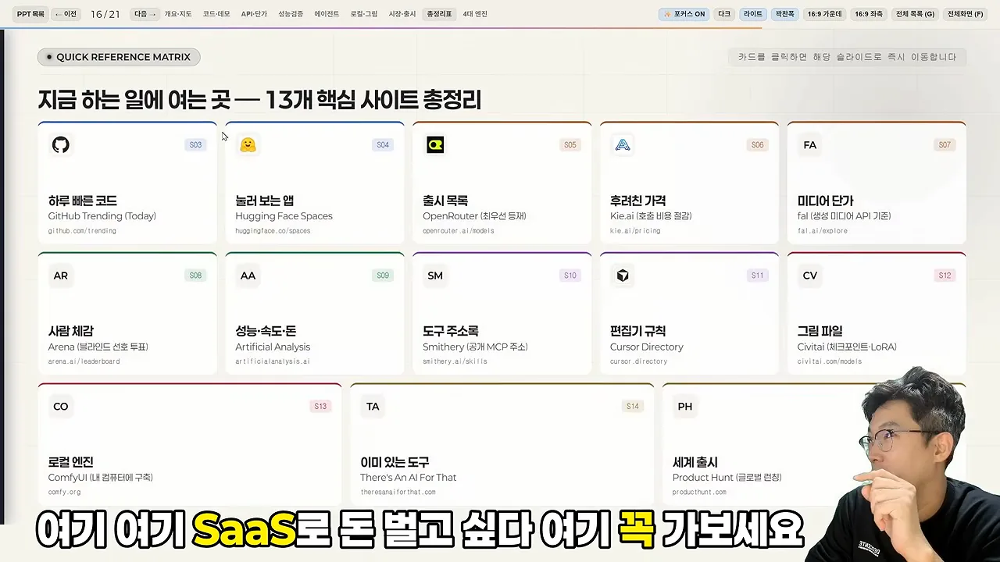
깃허브와 허깅페이스: 공개된 코드와 모델을 가져오는 곳
발표자가 '절대 모르면 안 되는 세 곳'으로 꼽는 것이 깃허브, 허깅페이스, 오픈라우터예요. 이 절에서는 앞의 두 곳을 다뤄요. 둘 다 누군가 만든 것을 공개해 두는 곳인데, 깃허브에는 코드와 스킬이, 허깅페이스에는 AI 모델 파일이 올라와요.
깃허브 트렌딩에서 스타 수부터 봐요
AI로 누구나 개발을 하게 되면서, 만든 것을 공개해 기회를 얻으려는 사람도 늘었어요. 그런 프로젝트가 가장 활발하게 모이는 곳이 깃허브고, 그날 주목받은 저장소는 깃허브 트렌딩 페이지에 올라와요. 화면의 각 줄 오른쪽에 붙은 별 숫자가 스타예요.
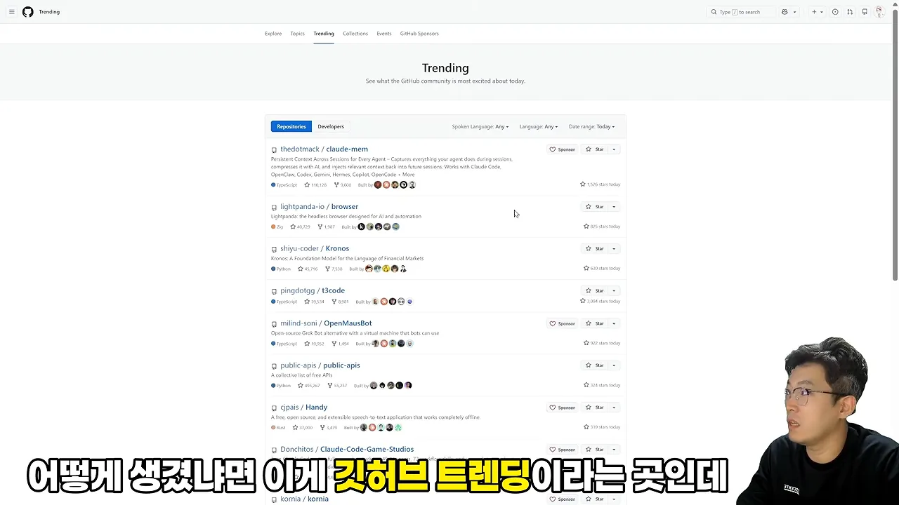
스타는 마음에 든 사람이 직접 눌러야 쌓여서 받기가 어렵다고 해요. 발표자 자신도 잘 누르지 않는대요. 그래서 짧은 기간에 수십만 개를 받은 오픈클로 같은 프로젝트는 그만큼 눈에 띄는 경우예요.
주소만 AI에게 넘기면 끝이에요
쓸 만한 저장소를 찾았다면 직접 설치법을 읽을 필요가 없다고 해요. 메모장 화면처럼 저장소 주소를 복사해 AI 채팅에 붙이고 "이거 설치하고 스킬 만들어 줘"라고 하면, AI가 필요한 부분을 알아서 가져와요.
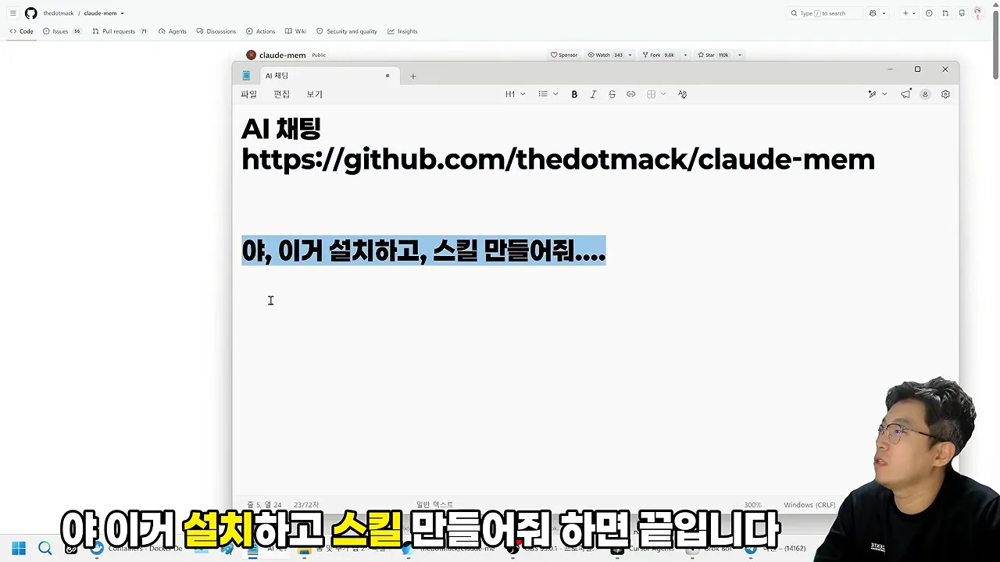
허깅페이스는 모델 파일을 내려받는 곳이에요
허깅페이스의 Models 탭에는 딥시크, 엔비디아, 바이두 같은 회사부터 개인 개발자까지 오픈소스 모델을 올려요. 왼쪽은 작업 종류(텍스트 생성, 이미지 생성 등) 필터이고, 가운데가 모델 목록이에요.
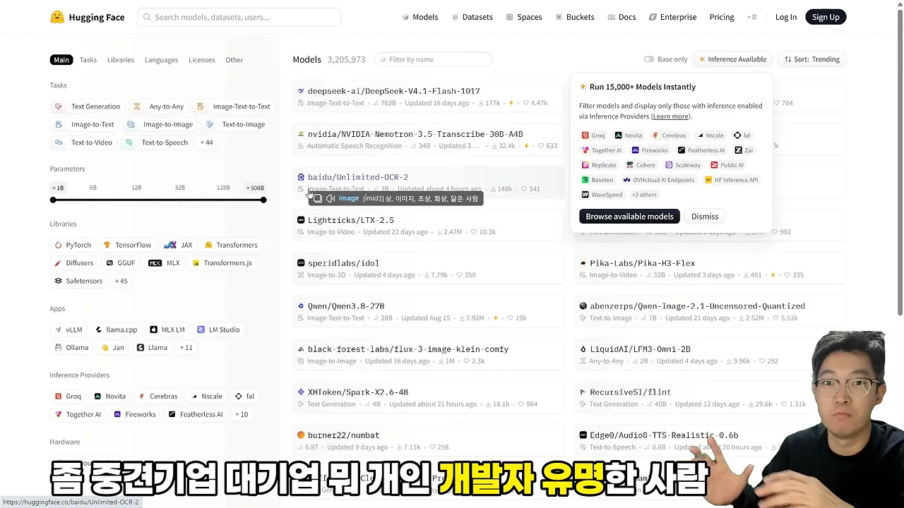
모델 페이지의 파일 목록을 열면 model-00001-of-00046.safetensors처럼 번호가 붙은 Safetensors 파일이 수십 개 이어져요. 이 파일 묶음이 모델의 가중치예요. 다 받아서 내 컴퓨터에 설치하면 내 GPU(Graphics Processing Unit)로 모델을 돌릴 수 있어요.
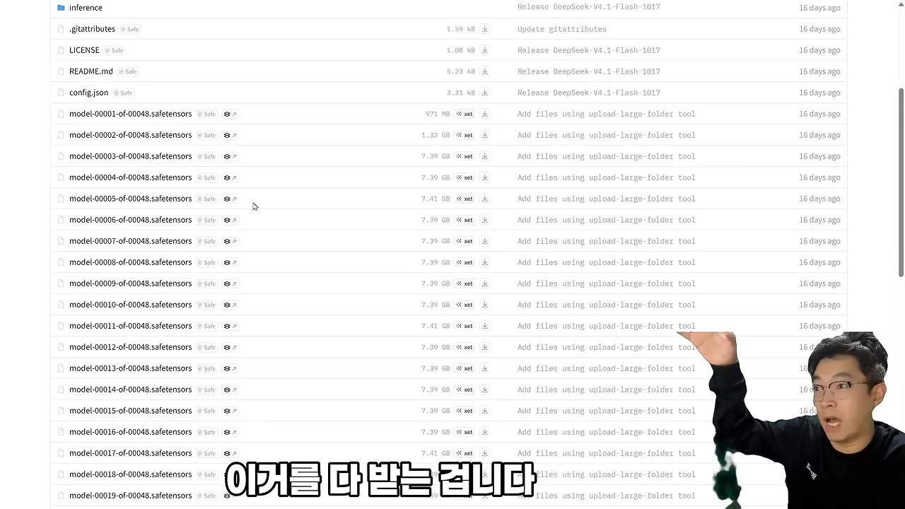
오픈라우터·Kie·fal: 모델을 API로 부르는 곳
허깅페이스가 모델 파일을 받아 내 컴퓨터에서 돌리는 곳이라면, 이 절의 세 곳은 이미 누군가의 서버에서 돌고 있는 모델을 API로 불러 쓰는 곳이에요. 내 컴퓨터 사양과 상관없이, 쓴 만큼 돈을 내요.
오픈라우터: 새 모델이 가장 먼저 보이는 정가판
슬라이드는 오픈라우터를 '상용 모델이 세상에 나왔는지 제일 먼저 보이는 목록'이라고 소개해요. 오른쪽 창이 주간 LLM(Large Language Model) 리더보드인데, 모델 이름 옆 숫자가 그 주에 오픈라우터를 거쳐 쓰인 토큰 양이에요. 1위 DeepSeek V4.1 Flash 1017이 47.8T로, 2위 GLM(General Language Model) 5.3 Flash(15.7T)의 세 배 가까이 돼요.
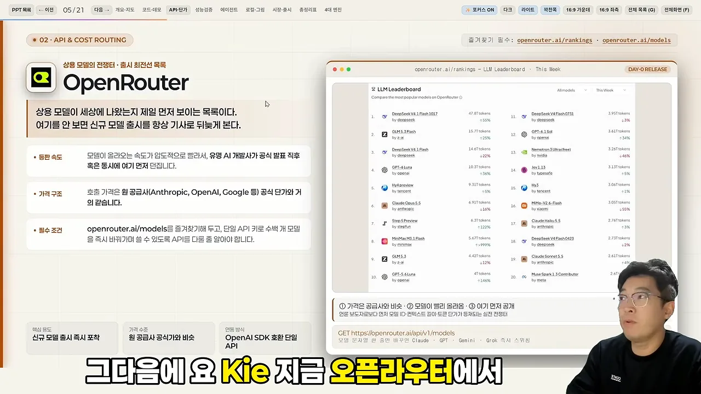
슬라이드 왼쪽 '가격 구조' 칸에는 호출 가격이 원 공급사(Anthropic, OpenAI, Google)의 공식 단가와 거의 같다고 적혀 있어요. 오픈라우터에서는 같은 모델을 서비스하는 여러 프로바이더 목록도 볼 수 있어요.
Kie.ai: 마진을 깎아 싸게 파는 곳
발표자가 실제로 가장 많이 쓴다는 곳이에요. 슬라이드 한 줄 요약이 'OpenRouter가 출시를 보는 곳이라면, Kie는 돈을 낼 때 여는 곳'이에요. 아래 '등재 속도' 칸에는 새 모델이 올라오는 속도는 오픈라우터보다 느리다는 단점도 적혀 있어요.
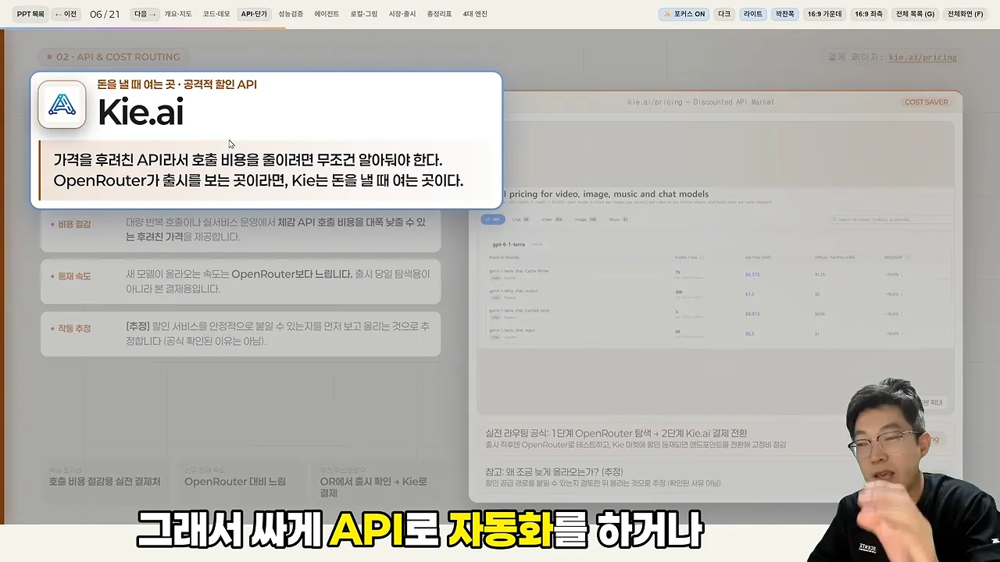
할인 폭은 가격표에서 바로 보여요. 발표자는 GPT(Generative Pre-trained Transformer)를 구독하지 않고, GPT-6.1 Terra가 필요할 때 Kie에서 API로 불러 써요. 아래 표의 'Our Price' 열이 Kie 가격, 'Official' 열이 공식 가격이고, 맨 오른쪽 'DISCOUNT' 열이 모두 −70%예요.
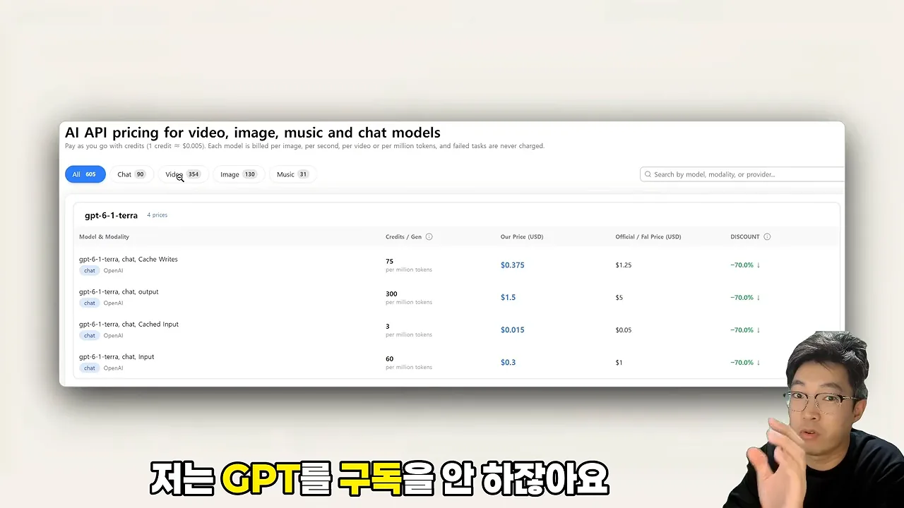
| 모델 · 항목 | 공식 가격 | Kie 가격 | 할인 |
|---|---|---|---|
| GPT-6.1 Terra · 출력(100만 토큰) | 5달러 | 1.5달러 | −70% |
| GPT-6.1 Terra · 입력(100만 토큰) | 1달러 | 0.3달러 | −70% |
| Kling(영상) | 0.157달러 | 0.1425달러 | 약 −9% |
| Gemini Argon | 10달러 | 4달러 | −60% |
할인 폭은 모델마다 달라요. 메이저 챗 모델은 60~70%씩 깎이지만 영상 모델 Kling처럼 몇 %만 싼 것도 있어요. 발표자가 주로 쓰는 건 Gemini 3.8 Flash-Lite TTS(Text-to-Speech)로, 싸고 빠르다고 해요. API로 부르기 때문에 "이미지와 영상을 이렇게 만들어 줘" 같은 작업을 자동화로 묶을 수 있다는 점도 강조해요.
fal: 다른 곳에 없는 미디어 모델이 있는 곳
fal은 발표자가 직접 쓰지는 않지만 알아 두라고 한 곳이에요. 가격은 센 편인데, AI 서비스 회사들이 이상하리만치 fal 가격과 자기 가격을 비교한대요. 슬라이드도 fal을 '생성 미디어 추론 인프라 · 기준 단가표'라고 소개해요.
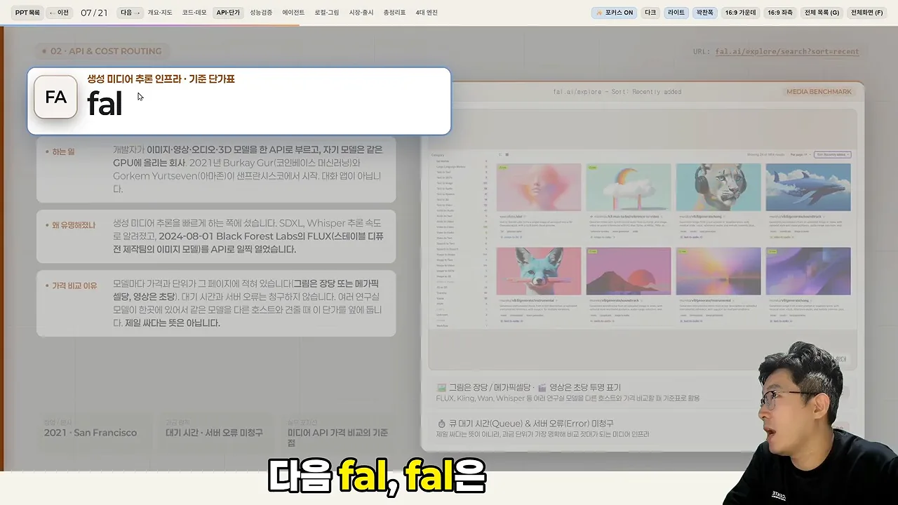
fal에는 오픈라우터나 Kie에 없는 모델, 다른 곳에서는 서비스가 끝났는데 여기서는 아직 돌아가는 모델이 있다고 해요. 세 곳을 나란히 놓으면 이렇게 정리돼요.
| 사이트 | 가격 | 강점 | 언제 여나요 |
|---|---|---|---|
| 오픈라우터 | 공식 가격과 같아요 | 새 모델이 가장 먼저 올라와요 | 새 모델을 처음 써 볼 때, 순위를 볼 때 |
| Kie.ai | 60~70% 싼 경우가 많아요 | 챗·이미지·영상·음악·TTS를 싸게 불러요 | 자주 반복해서 부를 때 |
| fal | 비싼 편이에요 | 다른 곳에 없는 미디어 모델이 많아요 | 낯선 이미지·영상 모델을 찾을 때 |
Arena와 Artificial Analysis: 모델 성적표 두 개
어떤 모델이 좋은지 판단할 때 발표자는 두 사이트를 봐요. Arena는 사람이 직접 고른 결과로, Artificial Analysis는 같은 시험을 돌린 점수로 순위를 매겨요.
Arena: 이름을 가린 채 붙이는 대결
Arena에서는 두 AI 모델에게 같은 지시를 주고, 결과만 보고 사용자가 더 나은 쪽을 골라요. 어느 모델인지 모른 채 고르니 블라인드 테스트예요. 첫 화면에는 지금까지 쌓인 투표 수(372,339,097)와 상위 10개 에이전트 순위가 막대로 나와요.
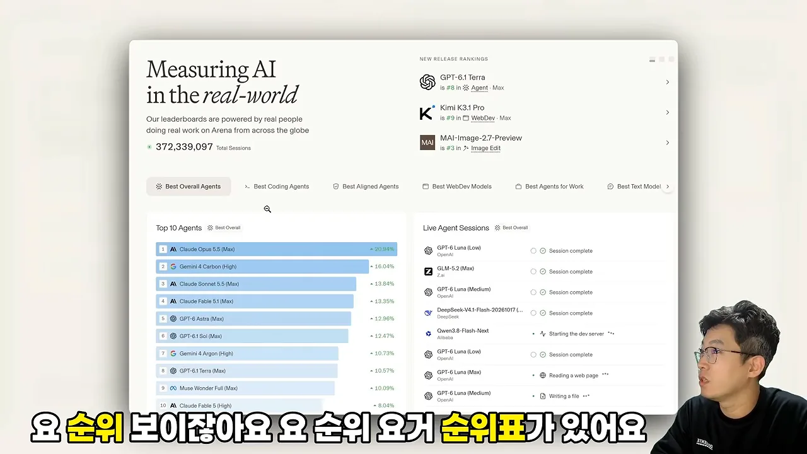
발표자는 나노바나나를 예로 들어요. 구글이 이름을 밝히지 않은 채 이 대결에 이미지 모델을 올렸는데, 결과가 압도적이어서 화제가 됐다는 거예요. 화면에는 'Arena'로 나오지만 발표자는 LMArena, LLM Arena라고도 불러요.
Artificial Analysis: 성능·속도·비용을 한꺼번에
Artificial Analysis는 모델이 나올 때마다 같은 과제를 시켜 점수를 매겨요. 사람의 취향이 아니라 시스템이 준 점수예요. 아래 막대그래프가 그 점수인 Intelligence Index로, 왼쪽 막대일수록 높아요.
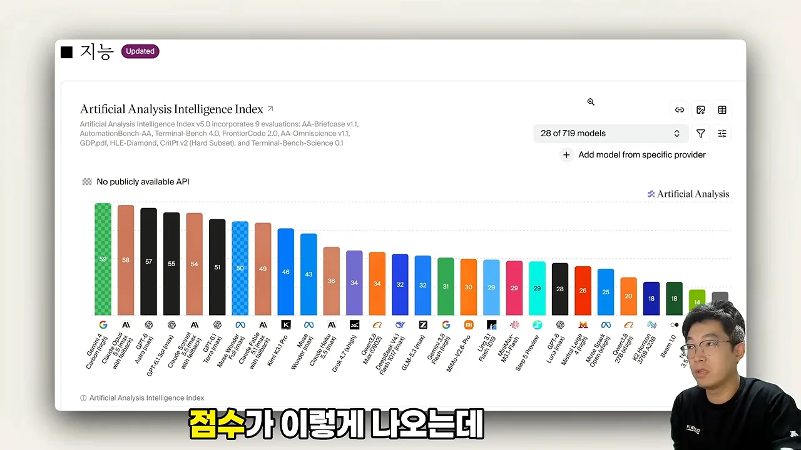
슬라이드는 이 사이트의 쓸모를 '똑똑함만 보면 청구서가 따로 온다'는 말로 요약해요. 가운데 '3대 핵심 지표' 칸처럼 지능 점수, 초당 토큰 생성 속도, 100만 토큰당 가격을 함께 봐야 실제로 쓸 모델을 고를 수 있다는 뜻이에요.
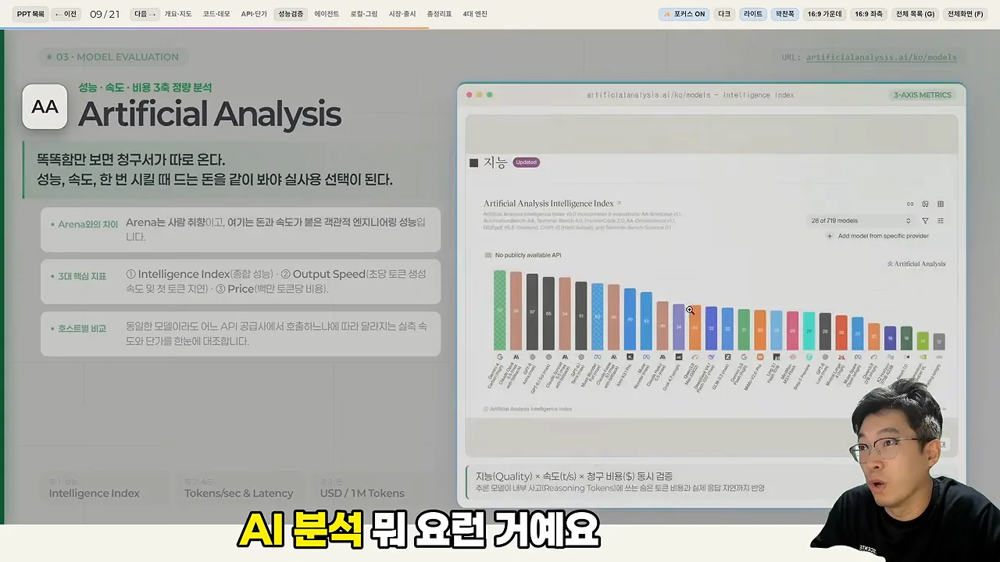
속도 순위에서는 메타의 Muse Wonder가 딥시크를 앞질렀다며 발표자가 놀라기도 해요. 다만 이 점수는 참고용이라고 선을 그어요. 1등 모델을 무조건 쓰기보다, 내가 쓰는 모델이 어느 수준인지 알고 고르는 데 쓰라는 거예요.
Claude Code 확장 지도: 룰·스킬·MCP
여기서부터는 사이트가 아니라 개념이에요. 발표자는 AI를 제대로 쓰려면 이 개념들을 꼭 알아야 한다며, Claude Code 공식 문서의 확장 기능을 한 장으로 정리한 '확장 지도'를 보여 줘요. 왼쪽 위 흰 칸의 세 줄이 핵심이에요.
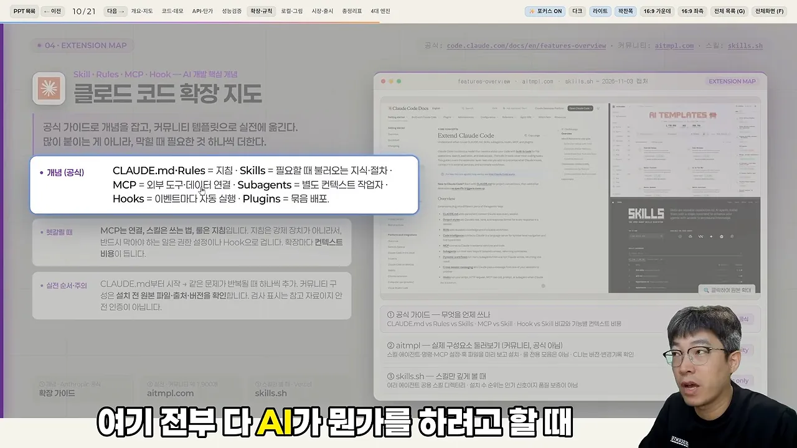
룰은 지침, 스킬은 쓰는 법, MCP는 연결
CLAUDE.md에 적는 Rules는 '무엇을 하고 무엇을 하지 마라'는 지침이에요. 스킬은 항상 켜져 있지 않고, 사용자의 지시에 특정 키워드가 들어왔을 때 발동해서 그 안에 적힌 절차를 따라 해요. 발표자는 영상 편집을 예로 들어요. 오늘 편집한 순서를 스킬로 남겨 두면 다음 영상은 그 양식대로 바로 편집해 준다는 거예요.
MCP는 노션, Supabase, Vercel 같은 외부 서비스를 AI에 연결할 때 써요. 서브 에이전트는 Claude Code가 일에 따라 또 다른 에이전트를 열어 일을 나눠 주는 구조로, 발표자 표현으로는 'AI 대빵 밑에 AI 직원들'이에요. 훅은 특정 조건이 되면 자동으로 실행되는 규칙이고, 플러그인은 이것들을 한 번에 설치되게 묶어 배포하는 단위예요.
발표자는 이 여섯 가지를 똑같이 다루지 않아요. 사람이 신경 쓸 것은 Rules, Skills, MCP 세 가지이고, 서브 에이전트와 훅은 AI가 알아서 해 준다고 나눠요. 그중에서도 가장 중요한 건 스킬이라고 거듭 말해요.
개념이 헷갈리면 공식 문서를 열어 보라고 해요. Claude Code Docs의 'Extend Claude Code' 페이지 Overview 목록에 CLAUDE.md, Output styles, Skills, MCP, Subagents, Hooks, Plugins가 한 줄씩 정리돼 있어요. 모르는 항목은 AI에게 물어 가며 배우면 된다는 게 발표자의 조언이에요.
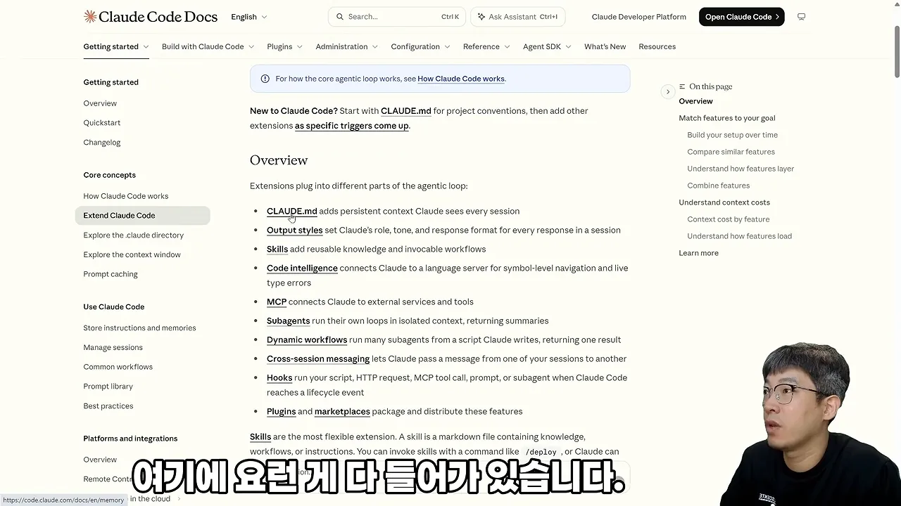
남이 만든 스킬을 모아 둔 AITMPL
AITMPL은 스킬, MCP, 에이전트 설정 같은 것을 모아 둔 커뮤니티 사이트예요. 왼쪽 메뉴에 Skills, Agents, Commands, Hooks, MCPs, Plugins 같은 분류가 있고, 위쪽에 누적 다운로드 수가, 아래에는 Frontend Design, Code Reviewer, Senior Frontend 같은 카드가 다운로드 수와 함께 늘어서 있어요.
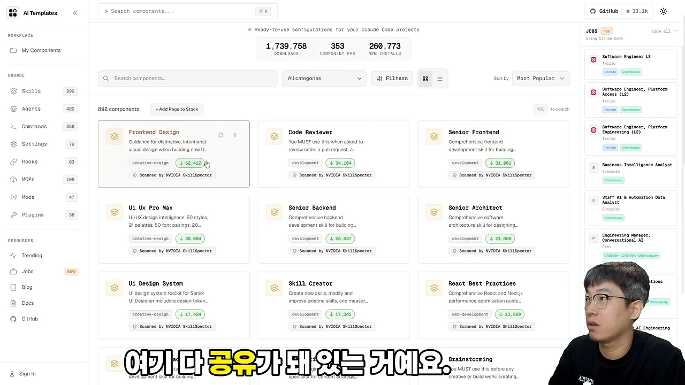
Skills.sh와 Cursor Directory: 스킬과 MCP 고르는 곳
확장 지도에 이어 발표자는 스킬과 MCP를 골라 담을 수 있는 목록 사이트 두 곳을 보여 줘요. 스킬은 Skills.sh에서, MCP와 편집기 규칙은 Cursor Directory에서 찾는 식이에요.
Skills.sh: 지금 많이 설치되는 스킬 순위
Skills.sh는 스킬만 모아 둔 리더보드예요. 탭이 All Time, Trending (24h), Hot으로 나뉘는데, 화면은 24시간 안에 설치가 몰린 Trending 탭이에요. 1위 ai-image-generation이 2만 9천 회쯤 설치됐어요.
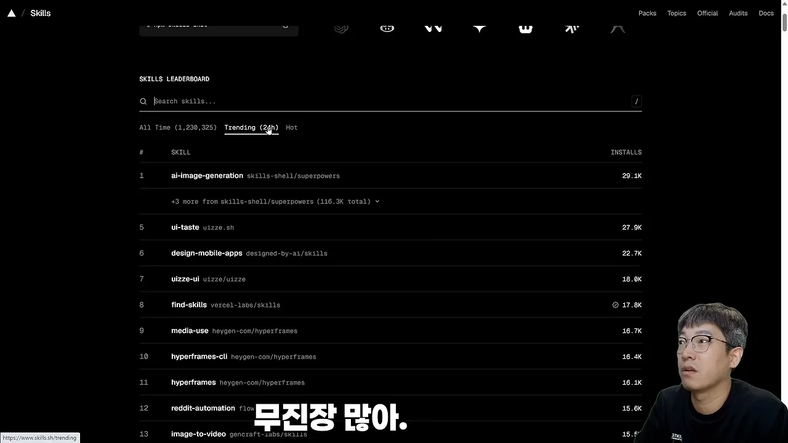
Cursor Directory: MCP와 편집기 규칙 수천 개
Cursor Directory에는 각 회사 서비스의 MCP가 수천 개 등록돼 있어요. 화면처럼 목록을 내려가면 노션, 슬랙, SvelteKit, MongoDB, Supabase 등이 보여요. 노션 MCP를 연결해 로그인해 두면, AI가 내 노션 계정에 들어가 파일을 불러오거나 데이터베이스를 고칠 수 있어요.
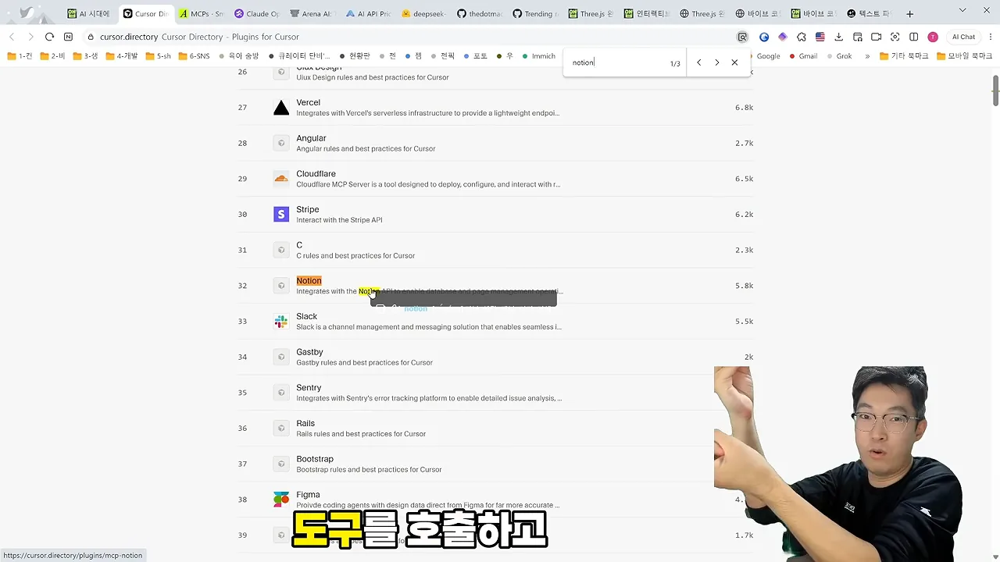
슬라이드는 Cursor Directory의 다른 쓸모도 적어 둬요. '편집기 성능은 모델만으로 안 정해진다'는 문장 아래, Next.js, FastAPI, Rust, Flutter처럼 기술 스택별로 남이 다듬어 둔 규칙 파일을 가져와 쓰라고 해요. 오른쪽 창이 그 규칙의 인기 순위예요.
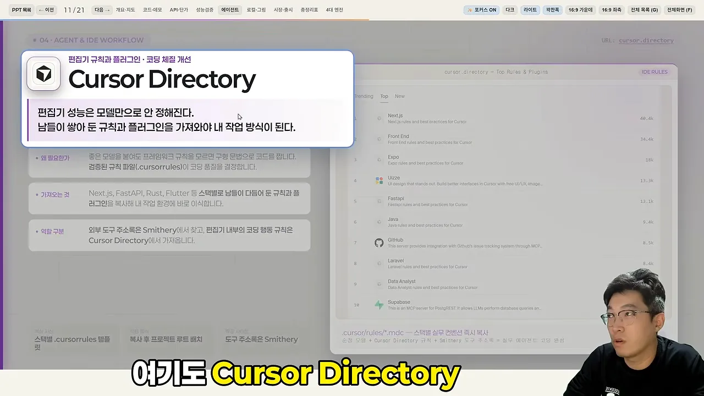
Civitai와 ComfyUI: 내 컴퓨터로 이미지·영상 만들기
이미지와 영상 쪽에서도 발표자는 돈을 내고 쓰는 상용 서비스 말고 길이 하나 더 있다고 말해요. 가중치가 공개된 오픈소스 모델을 받아 내 컴퓨터, 내 GPU로 직접 돌리는 길이에요. 그 재료를 받는 곳이 Civitai이고, 돌리는 도구가 ComfyUI예요.
Civitai: 화풍을 입힌 모델 파일을 나누는 곳
사람들은 공개된 이미지 모델을 추가로 학습시켜 특정 화풍이나 스타일로 뽑히게 만들고, 그 결과를 Civitai에 올려요. 이렇게 공유되는 작은 추가 학습 파일을 LoRA라고 해요. 화면 카드 왼쪽 위의 Checkpoint, LoRA 표시가 파일 종류예요.
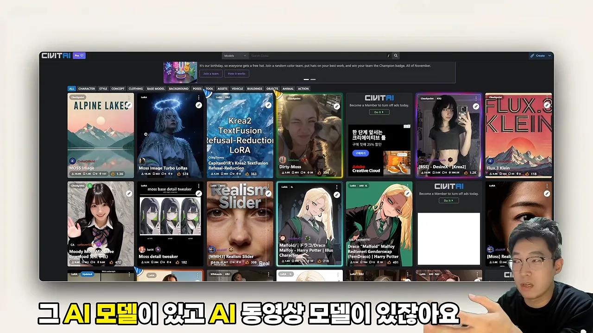
발표자는 이곳을 '골 때리는 사이트'라고 불러요. 오픈소스 모델을 내 컴퓨터에서 돌리면 상용 서비스의 검열에 걸려 못 만드는 이미지도 만들 수 있어서, 그런 용도의 파일도 많이 올라온다는 거예요. 상용 영상 서비스인 시댄스(Seedance)만 보지 말고 이쪽 세계도 알아 두라는 취지예요.
ComfyUI: 이미지 생성 과정을 노드로 미리 짜 두는 도구
ComfyUI는 돈을 내고 생성하는 대신 '내 GPU를 녹이고 집 전기세를 써서' 직접 만들어 보려는 사람들이 쓰는 프로그램이에요. 화면처럼 이미지, 3D 각도, 색상 같은 처리 단계가 각각 상자로 있고 선으로 이어져 있어요. 이 상자 하나하나를 노드라고 해요.
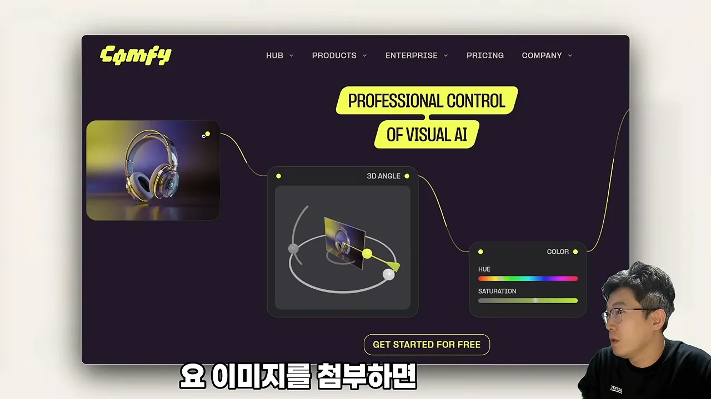
발표자 설명으로는 예전엔 이런 흐름을 직접 프로그래밍해야 했는데, ComfyUI가 나오면서 AI 이미지와 영상이 쏟아져 나오기 시작했어요. AI 웹툰, 애니메이션, 2D·3D 작업을 원하는 화풍으로 한 번에 뽑는 데 써요. 두 곳은 함께 써요. Civitai에서 받은 파일을 ComfyUI에 넣어 돌리고, 거기서 LoRA 학습까지 배울 수 있어요.
There's An AI For That과 Product Hunt: 찾고 내놓는 곳
마지막 두 사이트는 '이미 누가 만든 게 있는지 찾는 곳'과 '내가 만든 걸 세상에 내놓는 곳'이에요.
There's An AI For That: 만들기 전에 먼저 찾아보기
상상하는 대부분의 프로그램은 세상 어딘가에 이미 있지만, 찾기가 어려워요. There's An AI For That은 그런 AI 도구를 카테고리별로 모아 둔 곳이에요. 슬라이드 첫 문장이 이 사이트를 여는 이유를 그대로 말해요.
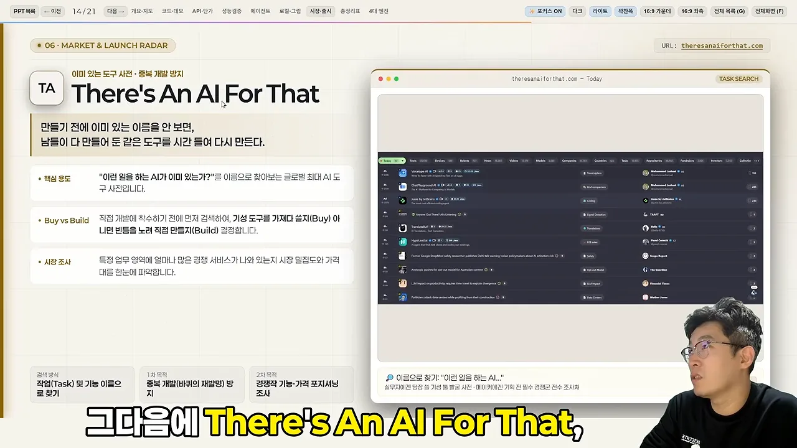
카테고리는 도구, 디바이스, 로봇, 뉴스, 비디오, 투자처럼 나뉘어 있어요. 올라온 것 상당수는 홍보 목적이라고 발표자도 인정해요. 그래도 비슷한 걸 만들기 전에 한 번 찾아보면 시간을 아낄 수 있어요.
Product Hunt: 세계 시장에 출시를 알리는 무대
앱이나 웹, SaaS를 만들어 돈을 벌고 싶다면, 그리고 국내보다 세계로 가고 싶다면 Product Hunt에는 꼭 올리라고 해요. 오른쪽 창은 2026년 연간 순위 화면이고, 아래 세 칸은 서비스, 앱·웹, SaaS가 각각 이 무대에서 얻는 것을 적어 둬요.
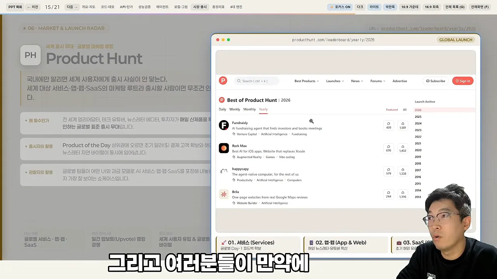
발표자는 하루 1등을 찍으면 그날 매출이 크게 오르고, 일주일이나 한 달 1등을 하면 인수 연락이 온다고까지 말해요. 전 세계 개발자들이 여기서 뜨려고 애쓰는 이유예요. 국내에만 알리면 큰돈을 벌기 어렵다는 게 발표자의 시각이에요.
모델은 직접 써 보고 고르기
13곳을 다 돈 뒤 발표자는 모델 이야기로 넘어가요. 슬라이드는 지금 많이 쓰는 모델 네 개를 카드로 보여 주는데, 첫 장이 Claude Opus 5.5예요. 오른쪽 위 '세대적 위치' 칸에 2026년 9월 22일 공개된 Claude 5.5 가족의 첫 모델이라고 적혀 있어요.
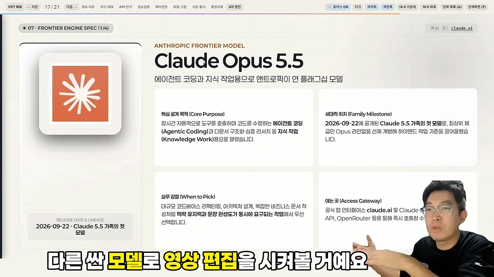
마지막 슬라이드는 네 모델을 나란히 놓고 '어느 모델을 쓸지는 직접 써 보고 고른다'는 결론을 적어 둬요. 표의 앞 두 열은 이 슬라이드 카드의 내용이고, 마지막 열은 발표자가 말로 한 평가예요.
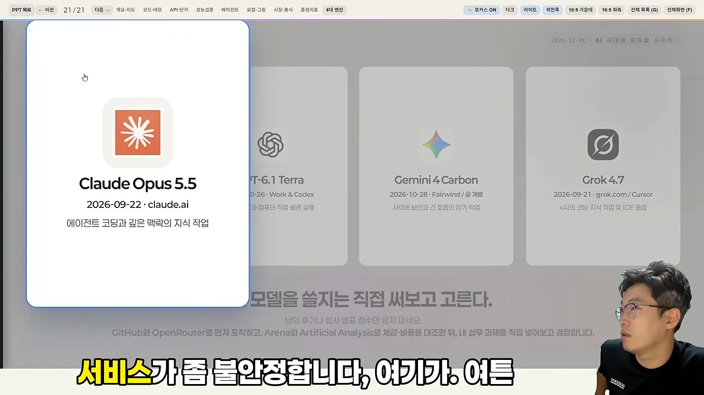
| 모델 | 슬라이드 카드 | 발표자의 평가 |
|---|---|---|
| Claude Opus 5.5 | 2026-09-22 · claude.ai · 에이전트 코딩과 깊은 맥락의 지식 작업 | 영상 편집을 잘하고 뭐든 잘해요. 다만 비싸고 느려요 |
| GPT-6.1 Terra | 2026-10-26 · Work & Codex · 컴퓨터 작업·빠른 실행 | 빠르고 싸요. 싸게 돌릴 작업에 써요 |
| Gemini 4 Carbon | 2026-10-28 · Fairwind / 곧 개방 · 사이버 보안과 긴 호흡의 장기 작업 | 아직 일반 공개 전이에요. 이전 모델 Argon도 슬라이드와 HTML(HyperText Markup Language), 사무 작업을 잘해요 |
| Grok 4.7 | 2026-09-21 · grok.com / Cursor · xAI의 코딩·지식 작업 및 IDE(Integrated Development Environment) 통합 | 지금은 쓰지 말라고 해요. 4.8이 나오면 써 보라고 해요 |
1등 모델보다 내 일에 맞는 모델
발표자는 일마다 잘하는 모델이 다르다고 말해요. 영상 편집은 Opus 5.5가, 슬라이드는 Gemini가 잘하고, 싸게 돌릴 작업은 GPT-6.1 Terra에 맡겨요. 이 영상의 슬라이드도 Genspark에서 Gemini Argon으로 만든 HTML이에요. Opus에 모션 그래픽을 맡기면 비싸서 일부러 다른 모델을 썼대요.
빡센 거는 Opus 시키고 좀 반복적인 건 딥시크 같은 거 시켜도 되잖아요
— 영상 26:49
비용도 고르는 기준이에요. Opus만 계속 쓰면 사용량이 금방 차서 월 20달러 요금제로는 부족하고, 100~200달러 요금제로 가기도 한다고 해요. Grok은 서비스가 불안정한 예로 나와요. 사용량이 60%였는데 예고 없이 100%가 찼다고 나오며 막혔고, Grok Bot 사용량도 갑자기 줄었다는 경험담이에요.
그래도 하나만 고르라면
어떤 모델도 결제해 본 적이 없다면 발표자는 Claude 20달러 요금제부터 시작하라고 권해요. 가장 좋은 건 200달러짜리 Max지만, 20달러로라도 Claude Code를 깔고 아무거나 시켜 보라는 거예요. 그러면서도 Grok, Gemini, Terra, Opus 중 무엇이 맞을지는 직접 써 봐야 안다고 거듭 말해요.
정리하면 깃허브, 허깅페이스, 오픈라우터 세 곳은 꼭 알고, 모델 네 개는 직접 써 본 뒤 정하라는 거예요. AI 때문에 일자리가 사라진다는 뉴스에 불안해하기보다, 이 사이트들의 서비스를 맛보고 내 업무에 적용해 보라는 말로 영상을 마무리해요.